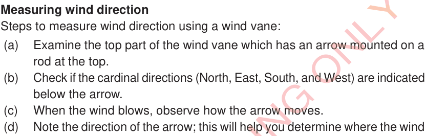

Measuring wind direction
Steps to measure wind direction using a wind vane:
(a)
Examine the top part of the wind vane which has an arrow mounted on a rod at the top.
(b)
Check if the cardinal directions (North, East, South, and West) are indicated below the arrow.
(c)
When the wind blows, observe how the arrow moves.
(d)
Note the direction of the arrow; this will help you determine where the wind is coming from and where it is heading.
Note: (i) If an arrow points South, it implies that the wind direction is from South to North.
(ii) If an arrow points North, it implies that the wind direction is from North to South.